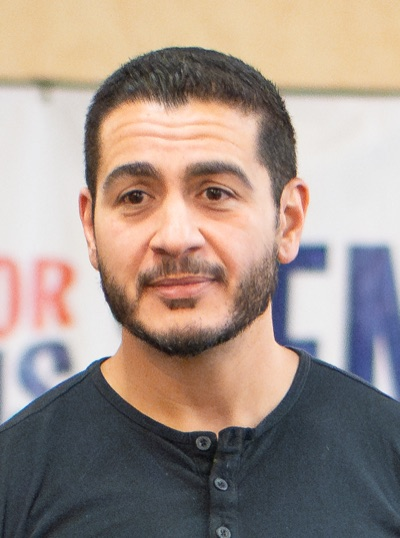
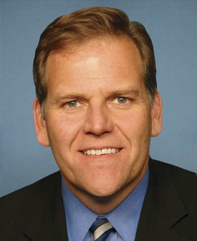
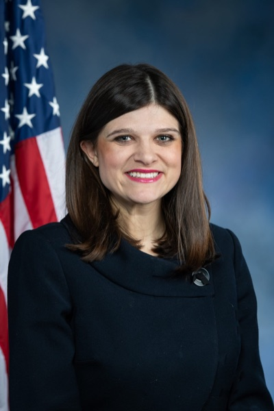
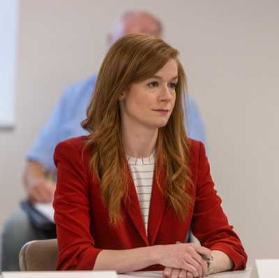

| 최신 여론조사 | ||||||
| 최신순 · 18건 · 양수 = 민주 우위(D+) | ||||||
| 조사기관 | 실사기간 | 모집단 | 표본 | 결과 | 마진 | 비고 |
|---|---|---|---|---|---|---|
| ★ Fox News/Beacon·Shaw | 2026-09-24 ~ 2026-09-28 | LV | 1028 | El-Sayed 50 – 49 Rogers | D+1 | ±3·_NIS 상원 주간 2026-10-04 §4·RV 기준 D+3·**8월 Fox 로저스 +4에서 역전**·같은 실사 창에서 Fox가 MI·TX·IA 세 곳 모두 민주 우위 실측 |
| Rasmussen Reports (R 성향) | 2026-09-22 ~ 2026-09-22 | LV | 1099 | El-Sayed 47 – 44 Rogers | D+3 | ±3·_NIS 상원 주간 2026-09-27 §4·공화 성향 하우스에서 나온 민주 우위 |
| Suffolk University | 2026-09-16 ~ 2026-09-20 | LV | 500 | El-Sayed 47 – 40 Rogers | D+7 | 일일 브리핑 09/24 추출 |
| Torchlight Strategies (R 성향) | 2026-09-15 ~ 2026-09-19 | LV | 643 | El-Sayed 43.1 – 44.4 Rogers | R+1.3 | ±4.7·_NIS 상원 주간 2026-09-27 §4·**공화 PAC 의뢰 당파 조사** — 같은 주 비당파 Suffolk +7·공화계 라스무센 +3과 방향 충돌 |
| Emerson College/Nexstar | 2026-09-12 ~ 2026-09-14 | LV | 1000 | El-Sayed 48 – 46 Rogers | D+2 | ±3.0·_NIS 상원 주간 2026-09-20 §4·9/17 발표·비대졸 로저스 +3 / 대졸 엘사예드 +11·호감도 엘사예드 순 +5 대 로저스 순 −4 |
| Trafalgar Group (R 성향) | 2026-09-07 ~ 2026-09-09 | LV | 1079 | El-Sayed 46.3 – 44.8 Rogers | D+1.5 | ±2.9·9/10 보고서·**공화당계 하우스가 민주 우위를 낸 사례**·8월을 규정하던 "로저스 우위 4연속" 서사를 끝낸 3연속 D 우위의 세 번째·최근 6건 평균은 약 엘사예드 +3 |
| CNN/SSRS | 2026-08-31 ~ 2026-09-06 | LV | 843 | El-Sayed 47 – 44 Rogers | D+3 | ±4.1·9/9 공개·**무당층 엘사예드 +16**으로 같은 주 Glengariff의 로저스 +14와 부호가 정면 충돌(30%p 폭, 현 지도 최대 측정 쟁점)·LV의 약 25%가 미확정(흑인·35세 미만은 40%) |
| Glengariff/WDIV–Detroit News | 2026-08-31 ~ 2026-09-03 | LV | 600 | El-Sayed 44.4 – 45.8 Rogers | R+1.4 | ±4.0·9/8 보도·이번 주 미시간 3건 중 유일한 공화 우위·**무당층 로저스 +14**(CNN의 엘사예드 +16과 부호 상충 — 미해소)·벤슨 주지사 문항과 동일 표본 |
| Epic-MRA | 2026-08-22 ~ 2026-08-28 | LV | 600 | El-Sayed 47 – 43 Rogers | D+4 | ±4.0·8/31 보도·같은 기관 7월 조사는 로저스 +3이었으므로 자체 시리즈 안에서 7포인트 스윙·8월 이후 독립 조사 3연속 엘사예드 우위의 세 번째 |
| MSU/IPPSR·YouGov | 2026-08-10 ~ 2026-08-20 | LV | — | El-Sayed 50 – 45 Rogers | D+5 | 9/1 공개·성인 표본 1,000에서 등록유권자 48–44(D+4)/적극투표층 50–45(D+5)·LV 부분표본 크기 미공표·같은 조사에서 무슬림 후보 기피 응답 37%가 반증으로 병기됨 |
| Susquehanna Polling & Research | 2026-08-11 ~ 2026-08-17 | LV | 800 | El-Sayed 46 – 39 Rogers | D+7 | ±3.46·미결정 9%/기타 4%·이번 주 최신 실사이자 4건 중 상단·직접 공표 링크 미확보(종합 보도 경유) |
| ★ AARP/Fabrizio·Impact | 2026-08-09 ~ 2026-08-11 | LV | 877 | El-Sayed 48 – 47 Rogers | D+1 | ±3.3·공화(파브리지오 워드)+민주(임팩트) 초당 합동·50+ 로저스 +9(65+ +13)/18–49 엘사예드 +14·투표의향 50+ 86% 대 50미만 71% |
| ★ Fox News/Beacon·Shaw | 2026-08-06 ~ 2026-08-10 | RV | 1006 | El-Sayed 47 – 51 Rogers | R+4 | ±3·경선 후 첫 주요 언론 본선 조사 |
| TIPP/TechnoMetrica | 2026-08-06 ~ 2026-08-10 | RV | 1528 | El-Sayed 45 – 42 Rogers | D+3 | ±2.6·폭스와 동일 실사기간인데 부호 반대·기타 7%/미결정 6%·Silver Bulletin 등급 A |
| GBAO (D 성향) | 2026-08-06 ~ 2026-08-10 | LV | 800 | El-Sayed 50 – 44 Rogers | D+6 | ±3.5·일일 브리핑 08/24 추출·원문 대조 일치·민주당 성향 PAC 의뢰 내부조사 — 할인 필요 |
| EPIC-MRA | 2026-07-24 ~ 2026-07-31 | LV | 600 | El-Sayed 43 – 46 Rogers | R+3 | ±4·8/3 공개·경선 후 첫 본선 조사 |
| Glengariff | 2026-07-22 ~ 2026-07-24 | LV | — | El-Sayed 38.7 – 49.0 Rogers | R+10.3 | 본선 가상(8/4 예비 전)·±4 |
| Glengariff | 2026-07-22 ~ 2026-07-24 | LV | — | Stevens 45.5 – 44.7 Rogers | D+0.8 | 본선 가상(8/4 예비 전)·±4 |
| 출처 URL은 `data/senate_polls.csv`에 행별로 보관합니다. 당파 후원(D/R 성향) 조사는 공개 선택 편향이 있으니 단일 조사보다 여러 조사의 방향을 함께 보세요. 표는 데이터에서 자동 렌더되며 새 조사가 들어오면 갱신됩니다. ★ = 주목 기관(NYT/Siena·Fox News·Marist·AARP) — 추이 그림에서도 큰 점으로 표시합니다. | ||||||
| 이번 주 판독 — **전주 "당파 조사 충돌의 판정"으로 걸어 둔 비당파 조사가 Fox 50–49로 도착했고, Marist +7·Trafalgar +2가 뒤따랐다.** 원천 집계로 공개 비당파 조사 4연속 엘사예드 우위(NYT/Siena +5·Marist +7·Fox +1·Trafalgar +2)다 — 8월의 "민주당 최대 위험 의석" 평가가 사실상 기각됐다. 로저스 쪽에 남은 것은 자금(잔여 예약 약 $4,200만)과 공화계 조사의 반대 신호다. 지역 언론은 갈렸다(Detroit Free Press 엘사예드 / Detroit News 로저스 지지). 원천은 다음 Cook·Sabato 갱신에서 민주 방향 상향 압력이 가장 큰 두 곳 중 하나로 미시간을 꼽는다. 토론 10/8. | ||||||
미시간 Michigan
공개석 (Peters 은퇴) — El-Sayed (D, 8/4 예비 승 약 1%p) vs Rogers (R) · MI
민주 방어Cook Toss-up 09-23Sabato Lean D 09-22IE Tilt D 10-02Kalshi 민주 72¢
조사 마진 추이 (양수 = 민주 우위 · 속 빈 점 = 당파 후원 조사)
데이터 기준 2026-10-03
- 여론조사 10-08 — Quantus(10/7) 48–47 · Mitchell Research(10/5) 엘사예드 46–41(+5) · YouGov(10/6) 49–48 · Marist(9/30) 51–44 · Fox(9/30) 50–49 · RCP 평균 엘사예드 +3.6(Toss-up).
- 판단 10-09 — 조사는 엘사예드 근소 우세가 이어지는 초접전이다. 새 로컬 보도가 없어 판단은 바뀌지 않는다.
Peters 은퇴로 민주당이 방어해야 하는 공개석. Cook은 Toss-up, Sabato는 2026-09-22 Toss-up → Leans D로 분류합니다(8월에는 두 기관 모두 Toss-up이었고, 당시에는 9개 경합주 중 본선 조사가 공화에 가장 유리한 주였습니다 — Crystal Ball 9/22). 8/4 민주당 경선에서 진보 성향의 Abdul El-Sayed가 온건파 Haley Stevens를 48.5–47.5(1%p)로 제압해 본선 대진이 확정됐습니다 — 8대 1의 자금 열세와 당 주류의 반대를 뒤집은 결과입니다. 이제 2024년 Slotkin에게 0.3%p로 졌던 공화당 Mike Rogers와 맞붙습니다. 공화당은 이 대진을 공개적으로 반겼고, 트럼프·밴스·NRSC의 조직적 이슬람 혐오 공세가 이어진 뒤 Rogers는 8/7 Stevens 지지층을 겨냥한 크로스오버 구애로 전술을 틀었습니다 — 규정짓기에서 연합 사냥으로의 전환입니다. 경선 직후 RCP 본선 첫 평균은 Rogers 44.3–El-Sayed 44.0(R+0.3)의 순수 접전이었으나, 8/6–10 실시된 폭스뉴스/Beacon&Shaw 조사(RV 1,006, ±3)에서 Rogers 51–El-Sayed 47(R+4)이 나오면서 경선 후 첫 주요 언론 조사가 공화 우위를 가리켰습니다 — Glengariff(+10)·EPIC-MRA(46–43)와 함께 엘사예드가 뒤지거나 동률인 조사가 4연속입니다. 다만 같은 폭스 조사의 교차분석은 양면적이고(54% “엘사예드 정책이 너무 극단” ↔︎ 51% “로저스는 트럼프와 너무 가까움”), 예측시장은 오히려 엘사예드를 57¢로 매겨 조사와 가격이 정면으로 갈린 상태입니다. (CNBC · Detroit News · CNN(크로스오버 전환) · Fox(8/6–10 조사))
- 구도: 민주 방어 공개석(Peters 은퇴) — Cook Toss-up / Sabato Leans D(9/22↑).
- 변화: 8/4 경선 El-Sayed 48.5–Stevens 47.5로 확정(McMorrow 4%, 개표 99%). 예비 전 가상대결에서 Rogers에게 가장 약했던 후보가 지명된 구도.
- 주의: 가상대결과 실제 대진의 조사는 같은 것이 아닙니다 — 예비 전 Glengariff(7/22–24)의 Rogers +10.3은 경선 직후 RCP 평균(R+0.3)에서 재현되지 않았습니다. 다만 8/6–10 폭스 조사에서 Rogers +4가 나오며 열세·동률 조사가 4연속이 됐고, 그런데도 예측시장은 El-Sayed 57¢ — 조사와 가격의 괴리를 평균 내지 말고 그대로 볼 것.
- 한국 함의: LG·SK·삼성 배터리 본진이나 후보의 직접 한국 입장은 미확인(추정 연결고리만).
로컬 상황 — 일일 기록
로컬 상황 · 일일 정리본에서 날짜별 누적 · 같은 사안은 처음 본 날짜로 한 번
- 10-09 이월 정정: 10/8 브리핑에 적었던 10/8 토론은 확인되지 않아 삭제했다. 확인된 일정은 9/15 Fox 2 Detroit 토론(로저스 불참)과 10/21 WXYZ 주관 2차 토론이다(ABC 계열; Fox 2 Detroit) · 유세: 2026-10-24(예고) · 디트로이트 · 버락 오바마(민주) → 압둘 엘사예드 · 제니스 벤슨과 함께하는 집회, 장소 미공개(PBS NewsHour, 이월).
- 10-08 이월: 로저스–엘사예드 토론 10/8(목)(오늘 재확인 못 함) · 로저스는 9/15 Fox 2 토론에 불참했다 · Denver Gazette에 따르면 엘사예드는 10/5 뉴욕에서 맘다니 시장, 오카시오-코르테스 의원과 유세할 예정이었다(Denver Gazette) · Michigan Advance(좌)에는 9/30 기사(슬롯킨 상원의원이 워런 타운홀에서 엘사예드와 합류)만 있었고, 우파 대응 매체는 수집하지 못했다 · 유세: 2026-10-24(예고) · 디트로이트 · 버락 오바마(민주) → 압둘 엘사예드(제니퍼 벤슨 동반) · 미시간 상원 후보로는 첫 오바마 유세이며 장소는 미공개(PBS NewsHour).
- 10-07 이월: 토론은 10/8(목) 오후 7시 ET(WOOD-TV/NewsNation)다 · 로저스는 9/15 Fox 2 포럼에 불참해 엘사이드 혼자 토론했다(FOX 2 Detroit) · Detroit Free Press, Bridge Michigan, Michigan Advance(좌)에서는 10/5–10/6 새 기사를 찾지 못했다
- 10-06 10/8(목) 로저스–엘사이드 토론(NewsNation/WOOD-TV) · 이월: Debate Week in Michigan: Four forums in three nights(The Detroit News, 중도우, 10/4). 페이지가 차단돼 제목만 확인했다.
- 10-05 이월: Rogers는 사회자 편향을 이유로 Fox 2 토론을 거부했다. 양측은 10/8 WOOD-TV8 토론에는 참석하기로 합의했다(FOX 2 Detroit). 편향 주장은 Rogers 캠프의 입장이다.
- 10-03 Detroit Free Press 편집위원회가 엘사이드를 지지했고, Fox News는 Detroit News가 로저스를 지지했다고 보도했다. Newsweek
- 09-28 카멀라 해리스 전 부통령이 이번 주 엘사예드를 위해 유세에 나섰다. CNN 엘사예드는 앤아버에서 AI발 일자리 위협 방지·주거비·기업 PAC 정치자금 거부 서약을 내세웠고, 로저스는 셜비타운십에서 엘사예드가 “아메리칸 드림” 가치와 배치된다 공격하며 유가 부담을 이유로 이란전 종식을 촉구했다. 두 후보 모두 유류세 유예에는 찬성이다. Michigan Public
- 09-26 NRSC 내부 메모는 미시간을 뉴햄프셔와 함께 당의 최우선 공격(뒤집기) 목표로 지목했다(액시오스). 엘사예드는 앤아버에서 “학생 대 억만장자” 구도를 내세우며 기업 정치자금을 받지 않는다고 강조했고, 로저스는 셸비타운십 유세에서 유가를 이유로 이란전쟁 종결을 촉구하며 “미국적 가치”로 엘사예드를 공격했다. 부재자 투표용지는 9/24부터 발송됐다(미시간퍼블릭라디오). 워싱턴이그재미너는 본선 경험 부재를 이유로 엘사예드를 “약한 우세 후보”로 평가했다(워싱턴이그재미너).
- 09-25 엘사예드가 ‘학생 대 억만장자’ 구도를 내세우자 로저스는 ’미국적 가치’로 반격했고, 부재자 투표용지는 9/24 발송됐다(미시간퍼블릭라디오) · 카멀라 해리스가 디트로이트 출산센터에서 엘사예드와 공동 유세했다(뉴스위크) · 디트로이트뉴스가 로저스의 트럼프식 공화주의로의 변화를 추적했다(디트로이트뉴스).
- 09-24 News 5 Cleveland(9/23)에 따르면 로저스의 “전쟁 종결” 메시지가 식료품점 배경의 유료 캠페인 광고로 바뀌었다 · 데일리코스 커뮤니티 글(당파적·저신뢰)은 로저스가 옛 지역구에서 약세라 주장하나 원자료 교차표는 검증하지 못했다【수집 필요】 · NRSC는 여전히 미시간을 탈환 목표 두 곳 중 하나로 유지한다.
- 09-23 이월: El-Sayed 성명 ‘말 바꾸기’ 공격 · 미시간 민주당 ‘Price Hike Mike’ 별명 부여 · 미결: NRSC 9/15 공세 이후 신규 공개 조사 여부 아직 미확인.
- 09-22 이월: NRSC의 9/15 CAIR 기부자 공격과 엘사예드의 반환 거부가 마무리 논점 · 1차 토론 10/8, 2차 10/21
기준 2026-10-09 · 최근 12건 표시(전체 32건)
의석 현황 — 현직·공석
- 공석 — 현직 은퇴: 2선 현직 Gary Peters(민주)가 2025년 1월 28일 불출마를 발표했습니다. 하원 3선·상원 2선을 마치고 “다음 세대에 횃불을 넘기겠다”고 했고, 가족과 보내는 시간도 이유로 들었습니다. 정치적 압박이 아닌 자발적 은퇴입니다. (NBC News)
개관
경제 — 자동차·EV 배터리 본진: 미시간 상원 레이스의 경제 서사는 EV 배터리에 묶여 있습니다. GM과 한국 LG에너지솔루션의 Ultium Cells 합작이 Lansing·Orion Township에 약 70억 달러 규모로 들어섰고, 2025년 5월 GM이 Lansing의 41GWh 공장 지분을 LG에 매각해 LG 단독 소유로 전환했습니다. 다만 연방 EV 보조금($7,500)이 2025년 9월 종료되자 북미 EV 수요가 급감 — LG는 Lansing 양산을 하반기로 연기했고, GM은 2025년 10월 배터리·EV 시설에서 3,400명 이상 감원을 발표했습니다. (American Progress · Bridge MI)
선거사 — 좁아지는 민주 마진: 미시간 상원은 2018년 Stabenow +6.5 → 2020년 Peters 약 +1.7 → 2024년 Slotkin +0.3으로 민주 우위가 매 사이클 축소됐습니다. 공교롭게 2024년 Slotkin에게 0.3%p로 패한 인물이 이번 공화 후보 Mike Rogers입니다. 동시에 대선은 2020년 Biden 승 → 2024년 Trump +1.5(약 8.3만 표)로 역전됐습니다. (NBC · Ballotpedia 2020)
경제·인구 구성
- 인구는 2025년 기준 약 1,013만 명으로 미국 10위입니다. (Wikipedia)
- 인종 구성은 2024년 기준 비히스패닉 백인 72.2%, 흑인 13.1%, 히스패닉 5.9%, 아시아계 3.4%입니다. (Data USA)
- 중위 가구소득은 2024년 기준 약 72,900달러로 전국 38위입니다. (Wikipedia)
- 인구의 절반가량이 디트로이트 대도시권에 살고, 어퍼반도는 33만 명이 안 되는 희박한 농촌·관광 지역입니다. (Wikipedia)
- 주력 산업은 자동차로 GM·Ford·Stellantis 본사가 디트로이트권에 있습니다. 그랜드래피즈는 Steelcase 등 가구 산업의 중심입니다. (Wikipedia)
역대 선거 결과의 특징
대선 10회 — 민주 7 · 공화 3 / 상원 (class 1) 7회 — 민주 6 · 공화 1 / 상원 (class 2) 6회 — 민주 6 · 공화 0 / 주지사 10회 — 민주 5 · 공화 5 · 파랑 = 민주, 빨강 = 공화, 회색 = 무소속 · 점선 테두리 = 특별선거 · 칸에 마우스를 올리면 마진 · 출처 위키백과 개별 선거 문서(기준 2026-09-30)
- 대선은 2012년 Obama +9.5%p, 2016년 Trump +0.2%p, 2020년 Biden +2.8%p, 2024년 Trump +1.4%p였습니다. (Wikipedia)
- 연방상원은 2018년 Stabenow +6.5%p, 2020년 Peters +1.7%p, 2024년 Slotkin +0.3%p였습니다. 민주가 세 번 연속 이겼지만 마진은 계속 줄었습니다. (Wikipedia)
- 주지사는 2018년 Whitmer +9.6%p, 2022년 Whitmer +10.5%p로 민주가 여유 있게 이겼습니다. (Wikipedia)
- 2016년 이후 대선 승자가 세 번 연속 바뀐 전형적 초경합주입니다. 연방상원은 민주가 지키되 격차가 1%p 안팎까지 좁혀졌습니다.
주지사·주의회
- 현 주지사는 민주당 Gretchen Whitmer로 2019년 1월 취임했습니다. 연임 제한으로 2026년 주지사 선거는 공석 경쟁입니다. (Ballotpedia)
- 주상원 38석은 민주 20·공화 18(2026년 5월 기준), 주하원 110석은 공화 58·민주 51·무소속 1(2025년 1월 기준)입니다. (Wikipedia 주상원 · 주하원)
- 주지사·국무장관·법무장관은 민주지만 주하원이 공화라 트라이펙타가 아닌 분점 정부입니다. (Ballotpedia)
- 2026년 11월 3일에는 주지사(공석)와 주상원 38석·주하원 110석 전체가 연방상원과 함께 걸려 있습니다. (Michigan Advance)
유권자 등록·투표율
- 등록 유권자는 약 794만 명입니다(2026년 9월 조회). 정당 등록제는 없습니다. (Independent Voter Project)
- VEP 투표율은 2018년 56.6%, 2020년 73.3%, 2022년 58.9%입니다. 2024년 확정치는 미확인입니다. (U.S. Elections Project)

압둘 엘사이드 Abdul El-Sayed민주
1984년생(42세) · 전 디트로이트 보건국장 · 역학자·의사 · 미시간대 교수
가족 이집트 이민자 아버지·미시간 토박이 계모 슬하 성장; 아내 Sarah Jukaku(정신과 의사), 두 딸
학력 University of Michigan 생물학 학사, Columbia University MD·역학 PhD, Oxford University 공중보건 DPhil(2011, 로즈 장학생)
경력 2018 미시간 주지사 민주 경선 출마(Whitmer에 패배)
펀드레이징 Q1 2026 모금 $2.27M, 현금 $2.52M
강점
- 30세 이하 유권자 최고 지지
- 아랍계·무슬림 커뮤니티(디어본) 연대
- 5~6월 경선 선두 부상
약점
- 본선 경쟁력 최약(Rogers와 동률)
- 무당파 지지 약함
- 진보 노선의 스윙 유권자 이탈 위험
정책 메디케어 포 올 · 그린 뉴딜·부유세 · ICE 폐지 · 이스라엘 공세적 군사원조 중단 요구
🇰🇷 한국 함의 한국 관련 직접 입장은 공개 출처에서 확인되지 않음

마이크 로저스 Mike Rogers공화
1963년생(63세) · 전 연방 하원의원(MI-8) · 전 하원 정보위원장 · 전 FBI 특수요원
가족 노동계급 가정 출생; 부인 Kristi Rogers(2010 결혼), 첫 결혼 자녀 2명; 형 Bill은 전 미시간 주 하원의원
학력 Adrian College 형사사법·사회학 학사(1985), University of Michigan ROTC 육군 임관
경력 MI-8 하원 7선(2000~2012) · 2024 미시간 상원 출마 → Slotkin에 0.34%p 석패
펀드레이징 외부지출 약 $45M 지원, 본인 현금 약 $4.2M(5월 기준)
강점
- 국가안보·정보 전문성
- 전주적 인지도(2024 출마)
- 민주 경선 장기화 동안 본선 선점
약점
- 2024 패배 이력
- 트럼프와의 관계 미묘
- ‘중국 연루’ 사업 이력 공격
정책 대중국 강경·국가안보 · 트럼프 관세 지지(전략적 도구) · 법과 질서·제조업 보호
🇰🇷 한국 함의 대중국 통상·제조업 보호가 핵심; 한국·동맹 직접 거명 입장은 공개 출처 없음(트럼프식 전략적 관세 지지)
민주당 경선 (8/4) — 함께 겨룬 후보들
본선 후보로 확정된 El-Sayed의 상세 프로필은 페이지 맨 위 후보 카드에 있습니다. 아래는 경선에서 함께 겨룬 두 후보입니다.

헤일리 스티븐스민주
Haley Stevens
1983년생(43세) · 연방 하원의원(MI-11) · 전 오바마 행정부 자동차산업 구제 태스크포스
- 학력 American University 정치학·철학 학사(2005), 사회정책·철학 석사(2007)
- 펀드레이징 Q1 2026 개인기부 $1.73M, 현금 보유 약 $3.3M(3인 중 최다)
강점 본선 경쟁력 최강(Rogers 대비 +5) · 상원 지도부 비공식 지지 · 교외 경합지 승리 실적
약점 경선 지지율 추세 열세 · 풀뿌리 열기 부족 · 진보 진영 냉담
정책 제조업·자동차산업 보호 · 대중국 커넥티드 차량 수입 차단(No Chinese Cars Act) · UAW 노동 친화

맬러리 매크모로민주
Mallory McMorrow
1990년생(36세) · 미시간 주 상원의원(2019~) · 전 산업 디자이너
- 학력 University of Notre Dame 산업디자인 학사(2008)
- 펀드레이징 Q1 2026 분기 모금 1위 $2.96M, 현금 $3.69M, 소액 기부 동력 강함
강점 풀뿌리 열기·밀레니얼 대표성 · 소셜미디어 활용력 · 2022 바이럴 연설 전국 인지도
약점 연방 경험 부재 · 전주적 조직력 미검증
정책 교육·LGBTQ 권리·총기 규제 · EV 전환 대비 경제 전환 사무소 설치 · 무차별 관세 반대·동맹 협력형 전략 무역
경선은 외교정책(가자/이스라엘)·당 지도부 노선을 둘러싼 3파전이었습니다. 초기 McMorrow가 선두였으나 5~6월 들어 El-Sayed가 부상했고, McMorrow가 경선 한 달 전 캠페인을 중단하면서 El-Sayed 48.5 – Stevens 47.5 – McMorrow 4.0(개표 99%)으로 끝났습니다. 본선 경쟁력(Stevens 최강)과 경선 모멘텀(El-Sayed)이 엇갈리는 딜레마에서 민주당 유권자가 후자를 택한 셈입니다.
이 선택의 의미는 아직 열려 있습니다. 예비 전 유일한 본선 가상 조사(Glengariff 7/22–24)는 Rogers 49.0 – El-Sayed 38.7(R+10.3)인 반면 Stevens로는 45.5–44.7 동률이었습니다. 그런데 경선 직후 예측시장은 오히려 El-Sayed 59센트로 민주 우위를 매깁니다. 7월 조사가 이름값 낮은 후보를 과소평가한 것인지, 시장이 경선 승리의 기세를 과대평가한 것인지는 8월 이후 본선 조사가 나와야 판별됩니다 — 이 사이트가 9개 주 중 가장 주의해서 볼 지점입니다. (CNBC · Michigan Advance)
roll-call / 입법 관심사
공개석이라 현역 상원의원이 없어, 연방 표결기록은 Haley Stevens(연방하원 MI-11)에게만 존재합니다.
- Haley Stevens (민주) — 미·중 전략경쟁 특위 위원. No Chinese Cars Act(중국 자동차 불공정 무역관행에 관세 부과)와 Slotkin 상원의원과의 Protecting America from Chinese Cars Act(중국 연결차량의 멕시코·캐나다 우회 차단)를 주도했습니다. 표결 기록상 CHIPS and Science Act·IRA에 찬성(연구·기술 소위원장으로 CHIPS 입안 주도). (Stevens 하원실 · GovTrack)
- Mallory McMorrow (주상원)·Abdul El-Sayed (전 Wayne 카운티 보건국장) — 연방 공직 경력이 없어 연방 표결기록 없음.
- Mike Rogers (공화) — 전 연방하원 정보위원장(2011~2015). 대테러·정보·FISA 정책 주도, 퇴임 후 CNN 안보 해설가. (앨라배마의 동명 Mike Rogers 군사위원장과 다른 인물.) (Wikipedia)
roll-call ID·날짜(Voteview/Congress.gov)는 현재 보도·하원 보도자료 수준만 확보 — 정확한 표결 번호는 보강 예정입니다(【수집】).
경선·본선 방식
- 경선 8/4, 결선(runoff) 없음: 본선거 경선은 단순 다수(plurality)로 후보를 확정합니다. 미시간에 결선 제도는 없습니다. (별도 1차 출처 보강 예정 — 【수집】)
- 개방형 경선(open primary): 미시간은 정당 등록제가 없어 등록 유권자는 어느 정당 경선에든 참여할 수 있습니다. 단 한 표에서 두 정당을 교차 선택하면 무효 처리됩니다. (Ballotpedia · LWV Michigan)
- 조기·부재자 투표(2022 Prop 2): 헌법 개정으로 모든 연방 선거마다 최소 9일 연속 조기 대면투표가 보장되고, 단일 신청으로 향후 선거 자동 부재자투표(영구 명부)가 명문화됐으며, 선거 당일 오후 8시까지 동시등록 후 투표가 가능합니다. (Ballotpedia Prop 2)
우편·조기 투표
- 우편(부재자)투표는 사유 없이 신청할 수 있습니다. 우편·온라인 신청은 선거 전 금요일 오후 5시까지, 클럭 사무실 방문 신청은 선거 전날 오후 4시까지입니다. (Michigan Voter Information Center)
- 반송 용지는 소인과 무관하게 선거일 오후 8시까지 클럭 사무실에 도착해야 합니다. 군·해외 유권자만 선거일 소인 뒤 6일 이내 도착을 인정합니다. (Michigan Voter Information Center)
- 대면 조기투표는 주헌법상 선거 전 둘째 토요일부터 선거 전 일요일까지 최소 9일입니다. 2026년 본선은 10월 24일부터 11월 1일까지입니다. (Michigan SOS 조기투표)
- 드롭박스는 선거일 40일 전부터 선거일 오후 8시까지 24시간 이용할 수 있습니다. 등록 유권자 1만 5천 명당 1개 이상이 의무입니다. (Michigan SOS 드롭박스)
- 신분증이 없어 확인서에 서명하고 투표한 표는 정규표입니다. 그 밖의 임시(provisional)투표는 선거 뒤 6일 안에 신원·거주를 확인해야 산입됩니다. (Michigan SOS 선거일 투표)
유권자 등록
- 온라인·우편 등록 마감은 선거일 15일 전으로, 2026년 본선은 10월 19일입니다. 이 날짜는 규정을 적용한 계산치입니다. (Michigan SOS 등록)
- 온라인 등록은 Michigan.gov/Vote에서 가능합니다. (Michigan SOS 등록)
- 자동 등록(AVR)은 국무부 지점 업무 과정에서 시행 중이며, 2026년 5월 절차 변경이 공지됐습니다. (Michigan SOS 공지)
- 2018년 주민발의 3호 이후 선거일 당일까지 클럭 사무실에서 거주 증빙을 갖춰 등록하고 투표할 수 있습니다. (Michigan SOS 등록)
신분 확인
- 투표소에서 사진 신분증을 보이거나, 없으면 확인서(affidavit)에 서명하는 비엄격(non-strict) 방식입니다. (Michigan SOS 선거일 투표)
- 인정 신분증은 미시간 운전면허증·주 ID(만료돼도 인정), 미국 여권 등입니다. 타주·기관 발급증은 유효기간 안이어야 합니다. (Michigan SOS 선거일 투표)
- 신분증이 없어도 확인서 서명만으로 정규 투표용지를 받으므로 별도 임시투표 절차가 없습니다. (Michigan SOS 선거일 투표)
- 신분증 규정의 최근 변경 연도는 공식 사이트에서 미확인입니다.
최근 14일 · 최신 10월 9일 (금) · 원천은 상원 일일 브리핑(매일 오전 갱신)입니다. “정리본”은 발행 단계에서 고정 구조로 압축한 것(원문에 없는 수치는 넣지 않음), “원문 전재”는 브리핑을 그대로 옮긴 것입니다. 종결체가 다르고, 이후 정정된 사실이 있을 수 있습니다. 판세의 현재 값은 위 카드·표를 보세요.
10월 9일 (금) · 정리본
- 수집 구간 내 유의미한 신규 사안 없음.
- 여론조사: 없음(직전: Quantus 10/7 엘사예드 48–47 · YouGov 10/6 엘사예드 49–48 · Mitchell 10/5 엘사예드 46–41 · Fox News 10/2 엘사예드 50–49).
- 자금: 없음
- 로컬: 이월 정정: 10/8 브리핑에 적었던 10/8 토론은 확인되지 않아 삭제했다. 확인된 일정은 9/15 Fox 2 Detroit 토론(로저스 불참)과 10/21 WXYZ 주관 2차 토론이다(ABC 계열; Fox 2 Detroit) · 유세: 2026-10-24(예고) · 디트로이트 · 버락 오바마(민주) → 압둘 엘사예드 · 제니스 벤슨과 함께하는 집회, 장소 미공개(PBS NewsHour, 이월).
- 주 함의: 조사는 엘사예드 근소 우세가 이어지는 초접전이다. 새 로컬 보도가 없어 판단은 바뀌지 않는다.
원천: _NIS 상원 일일 브리핑 KR(2026-09-26 ~ 2026-10-09). 추출 scripts/ingest_senate_daily.py · 렌더 daily_log_md().
이 표는
data/senate_polls.csv에서 자동 생성됩니다 — 프로즈에 수치를 박아두지 않으므로 새 조사가 수집되면 이 페이지도 함께 갱신됩니다. 단일 조사보다 여러 조사의 방향을 보세요.
조사 동향 — 일일 기록
여론조사 동향 · 일일 정리본에서 날짜별 누적 · 같은 사안은 처음 본 날짜로 한 번
- 10-08 Quantus(10/7) 48–47 · Mitchell Research(10/5) 엘사예드 46–41(+5) · YouGov(10/6) 49–48 · Marist(9/30) 51–44 · Fox(9/30) 50–49 · RCP 평균 엘사예드 +3.6(Toss-up).
- 10-07 YouGov(10/6) 엘사이드 49–로저스 48 · RCP 기반 평균 엘사이드 +3.6(Toss-up)
- 10-06 Trafalgar 10/2 엘사이드 47–45 · Marist 9/30 엘사이드 51–44 · Cygnal/Beacon 9/29 엘사이드 45–40 · Fox 9/24–28 엘사이드 50–49(이월) · FiftyPlusOne 평균 엘사이드 47.9–44.3(RCP 최신 상원 조사).
- 10-05 이월: Fox(9/24–28, LV)는 El-Sayed 50–Rogers 49로, 8월의 Rogers +4에서 역전됐다(Fox News). RCP에는 Marist(9/30) El-Sayed 51–44도 게재돼 있으나 세부 정보는 미확인이다.
- 10-03 Fox News(9/24–28) LV 엘사이드 50, 로저스 49(RV 51–48), 8월 로저스 +4에서 역전. Rasmussen(9/22, LV 1,099명) 47–44. RCP에는 Trafalgar(10/1 등재) 47–45와 Marist 51–44도 있으나 세부 정보는 수집하지 못했다. GBAO(9/28) 엘사이드 +4는 엘사이드 캠프 의뢰 조사라 비중을 낮게 본다. Fox News · Newsweek
- 09-28 Torchlight Strategies(공화 PAC 의뢰, 9/15-19): 로저스 +1.3%p. 이보다 최근의 라스무센 조사는 엘사예드 +3%p — 가장 경합이 치열한 민주 수성 필수주의 흐름이 어느 방향인지는 여전히 불분명하다.
- 09-27 Torchlight Strategies(공화 PAC ‘Common Sense for America’ 의뢰, 9/15~19 실시, 가능성 유권자 643명, ±4.7%p, 9/25 보도): 로저스 44.4% - 엘사예드 43.1%(공화 +1.3) — 당파적 의뢰 조사로 중립적 결과가 아님. Breitbart
- 09-26 라스무센 리포츠(9/22, 투표가능유권자 1,099명, ±3): 엘사예드 47% - 로저스 44%(민주 +3) — 우파 성향 기관(AllSides 분류)에서 나온 민주 우위라 의미 있는 신호로 평가되나, 2016년 이후 여론조사의 공화 지지 과소평가 경향도 함께 지적됐다.
- 09-25 서퍽대(조사 약 9/15-19, 9/21 발표, 실제투표층 500명, ±4.4): 엘사예드 +7포인트(이번 달 최대 격차, 무당층 51-35·여성 56-31 엘사예드) · 에머슨칼리지/넥스타(조사 9/12-14, 실제투표층 1,000명, ±3): 엘사예드 48% - 로저스 46%(대졸층 엘사예드+11, 비대졸층 로저스+3).
- 09-24 서퍽대 엘-사예드 47 – 로저스 40(LV 500명, 9/16–20, ±4.4). 민주당원 81%·공화당원 90% 결집, 무당층 엘-사예드 +16. NRSC 9/15 공세 이후 실시된 것으로 확인된 첫 미시간 조사다.
- 09-20 Emerson College/Nexstar: 엘사예드 48 – 로저스 46(이월, 4년제 학위 없는 유권자는 로저스 48–45, 대졸자는 엘사예드 53–42)(출처) · EPIC-MRA(8/22–28, n=600, ±4): 엘사예드 47 – 로저스 43(이월) · Silver Bulletin 평균 엘사예드 +2.9로 사이클 최대 — 로저스가 4연속 우세·동률에서 좁지만 일관된 엘사예드 우위로 이동.
- 09-18 신규 Emerson(9/12-14, n=1,000, ±3.0) 엘사예드 48-로저스 46, 미결정 4%. Epic-MRA 승계(엘사예드 +4, 47-43)와 합쳐 엘사예드 3연속 우위.
기준 2026-10-09 · 최근 12건 표시(전체 18건)
최신 자금 상황 (기준 2026-10-03) — 주 역사상 최대 지출 — 공개 집계 $2.05억+ · 트럼프 계열 No Going Back PAC $1,300만+(오하이오 다음 주별 2위) · 잔여 예약 $6,500만 중 약 $4,200만이 로저스 측
| FEC 분기 신고 — 사이클 누적 | ||||
| 취득 2026-10-05 · 단위 $M · 후보 본인 위원회 기준 | ||||
| 후보 | 정당 | 사이클 누적 모금 | 보유 현금 | 보고 마감 |
|---|---|---|---|---|
| 압둘 엘사이드 (Abdul El-Sayed) | 민주 | $14.51M | $2.55M | 2026-07-15 |
| 마이크 로저스 (Mike Rogers) | 공화 | $10.90M | $4.47M | 2026-07-15 |
| `scripts/fetch_fec_fundraising.py`가 FEC API에서 주간 취득한 원장입니다(자동). **슈퍼팩 외부지출은 포함되지 않습니다** — 이 사이클에서는 외부지출이 후보 자금보다 큰 주가 여럿이라, 위 상자의 외부지출 메모와 함께 보세요. 【수집】은 해당 후보의 FEC 신고가 아직 없다는 뜻입니다(추정으로 채우지 않음). FEC는 법적 이름으로 신고되므로 표기가 이 사이트와 다를 수 있습니다. | ||||
아래는 Q1(3/31 마감) 시점의 해설입니다 — 위 표는 FEC 원장에서 자동 렌더되는 사이클 누적치라 기준이 다릅니다.
McMorrow가 Q1 모금 1위(캠프 누적 $8.6M), Rogers가 보유현금 1위입니다. Stevens는 모금의 약 84%를 소진해 burn rate가 가장 높습니다. Rogers는 외부지출(outside spending) 약 $45M 확보가 보도됐으나, 이는 후보 캠프 직접 모금과 구분되는 외부 PAC 지출입니다(FEC 1차 확인 권장). (Michigan Advance · Detroit News)
자금 투입·지출 — 일일 기록
자금 투입·지출 · 일일 정리본에서 날짜별 누적 · 같은 사안은 처음 본 날짜로 한 번
- 10-08 SMP가 광고 시간을 확보한 9개 주에 미시간이 들어 있다(Ohio Capital Journal, 좌).
- 10-04 공개 지출 2억 500만 달러 이상 · No Going Back PAC 로저스 지원 1,300만 달러 이상, 선거일까지 6,500만 달러 예약(약 4,200만 달러가 로저스 지원). Bridge Michigan
- 10-03 MAGA Inc. 연계 No Going Back PAC가 로저스에 1,300만 달러 이상(오하이오 다음으로 큰 트럼프 측 단일 주 지출). 본선까지 6,500만 달러 예약 중 약 4,200만 달러가 로저스에 유리. Bridge Michigan
- 09-25 엘사예드가 앤아버 유세에서 기업 PAC 자금을 받지 않는다고 밝혔다(미시간퍼블릭라디오).
- 09-22 후보+지원세력 1억 5,000만 달러 이상 지출 · 엘사예드 7/15 기준 1,450만 달러 모금(로저스보다 370만 달러 많음) · America PAC(머스크) 신규 진입, 금액 미확정【수집 필요】 · SMP 추가 1,000만 달러(9/16, 기존) · SLF 예약 4,500만 달러(1회 증액)
- 09-21 SLF 미시간 예약 4,500만 달러(이후 증액). Senate Majority PAC 추가 1,000만 달러로 누적 3,000만 달러. 머스크 America PAC 참전. 반엘사예드 공화 슈퍼팩 600만 달러 매입. 출처
- 09-20 Senate Majority PAC이 엘사예드 지원에 1,000만 달러 추가, 미시간 누적 3,000만 달러(Axios 9/16, 새 TV 광고 그 주 화요일 시작)(출처) · 머스크의 America PAC이 로저스 지원으로 미시간 상원 선거 진입(출처), 8/11 보도된 반엘사예드 슈퍼팩 600만 달러 집행에 추가.
- 09-16 엘사예드 캠프가 신규 광고 “Staccato” 공개 — 로저스의 제약업계 100만 달러 이상 수령, 처방약 가격 인하 표결 19회 반대 지적.
- 09-14 이월: SLF가 8/31 주간에 미시간 광고 2편 집행.
- 09-10 AP/PBS(9/8) — SLF, 엘사예드 승리 직후 600만 달러 증액해 미시간 총 5,100만 달러(3위 규모); 예비선거에서 엘사예드 공격에만 약 7,000만 달러 집행. 승계: Senate Majority PAC 450만 달러 미시간 광고(8/31).
- 09-09 Senate Leadership Fund가 8월 로저스에게 600만 달러 추가(이월).
- 09-01 이월: 머스크 America PAC 1차 디지털 광고 대상에 MI 포함.
기준 2026-10-09 · 최근 12건 표시(전체 12건)
미시간은 LG에너지솔루션·SK온·삼성SDI 한국 배터리 기업의 대미 생산기지가 집중된 EV 산업 본진입니다. 특히 Lansing의 LG 단독 소유 공장은 이 레이스의 경제 서사 한복판에 있습니다.
- 직접 확인: 세 민주 후보·공화 Rogers 모두 한국을 직접 겨냥한 표결·법안·발언은 공개 출처에서 확인되지 않습니다. Stevens의 ‘No Chinese Cars Act’·’Protecting America from Chinese Cars Act’는 대상이 중국입니다.
- 추정 연결고리(사실 아님, 파급효과 차원): Stevens가 옹호한 IRA·국내 EV배터리 제조 강화·중국차 차단은 미시간 내 한국계 배터리 투자 환경에 간접 영향을 줄 수 있으나, 이는 직접적 한국 입법이 아니라 정책의 파급효과에 대한 추정입니다. 단정하지 않습니다.
- 따라서 미시간에서 한국 독자에게 실질적인 변수는 후보 개인의 한국 입장보다 관세·EV 보조금 정책의 거시 향배이며, 신규 한국 관련 발언·표결이 확인되면 Korea Watch에 기록합니다.